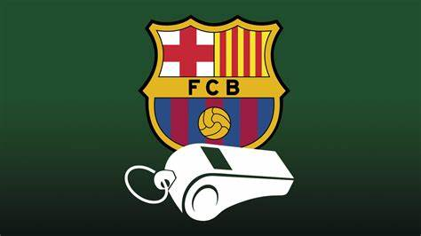

El caso negreira, uno de los mayores casos de corrupcion de la historia del deporte .
La informacion mas importante de este caso de corrupcion
Saber quien es Enrique Negreira es algo muy importante para entender lo que ha pasado con el y el Futbol Club Barcelona, Negreira fue el vicepresidente del comite de arbitros desde 1992 hasta 2018 el era el encargado de decidir quien ascendia de categoria como arbitro y de quien no lo hacia, tambien era el encargado de asignar los arbitros de los partidos